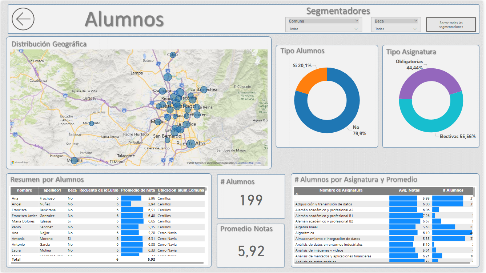

Proyectos Destacados

Visualización Gestión Académica.
Ver detalles
Visualización fuerza laboral.
Ver detalles
Visualización de ventas.
Ver detalles
Visualización ventas Restaurant.
Ver detalles
Extraer información de boletas.
Ver detalles